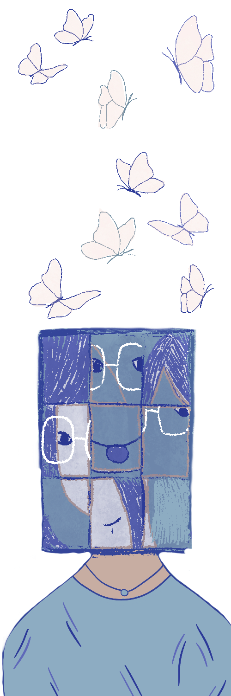

J’ai l’impression que je ne vois que la partie émergée de l’iceberg, tu vois. Je suis consciente que c’est un iceberg et qu’il y a une grande partie cachée, mais moi, je ne vois que la surface. J’ai une conception de ce que tu représentes, mais je n’arrive pas toujours à reconnaître quand ça change d’identité. Quand je me rends compte que ça a changé, là, je me dis par exemple ; : « Ah , ça, c’est Charly ! » Je sais que ce n’est pas toi, alors qu’en un sens, c’est toi, tu vois. Dans ma tête, tous les alters qui sont souvent au front, je les mets dans un groupe, en mode « Eux, ils me connaissent, donc on va avoir un peu les mêmes conversations que d’habitude, même si ce n’est pas exactement la même personne à chaque fois. » Mais du coup, c’est vrai que pour moi c’est un peu flou, parce que je n’essaie pas de comprendre en profondeur. Je pense que c’est parce que je n’ai pas envie de trop forcer. Je me dis simplement : « C’est ma pote et on discute, et puis voilà. » Comme je t’avais dit, j’ai du mal à reconnaître quand ce n’est pas la même personne, donc c’est comme si c’était juste toi, mais avec des « humeurs variantes », en gros. Mais je suis consciente que c’est bien plus complexe. Je vais juste réagir en fonction de la situation, mais pas forcément en fonction de tel ou tel alter. Après, j’ai conscience par exemple qu’il y a des triggers auxquels je dois faire attention, parce que ce n’est pas sympa de trigger quelqu’un, de le faire front involontairement ou de créer des crises ou même des sensations de mal-être. C’est juste ça que je garde en tête. Par exemple, je sais que Charly est un little, donc j’essaie d’être un peu plus… comme si j’étais avec un enfant, quoi. Je ne l’infantilise pas, mais je vais faire plus attention à lui, je ne vais pas lui dire des gros mots ou des trucs de cul… Mais à part ça, c’est normal, quoi.
La première fois que j’ai vu Charly, j’étais déjà prévenue avant, mais sur le coup, en mode : « Attends, qu’est-ce qu’il se passe ! ? Ah oui, ok… d’accord. » Après, du coup, je me suis comportée normalement, mais en faisant attention, c’est tout. C’était pour dire que ça peut être déroutant, mais on s’y fait. Ah oui, et puis aussi, il y a eu cette histoire pendant la soirée d’Halloween de notre école. Il y avait Faël, et il n’était pas content d’être en robe. Je comprenais, tu vois, c’est un garçon qui n’a pas l’habitude d’être en robe, mais en même temps, j’étais en mode : « C’est pour rigoler, allez ! C’est le délire que j’ai fait avec ma copine, toi tu ne veux plus le faire ! Putain ! » Du coup, à la fois, je ne savais pas trop quoi dire et j’essayais de le rassurer. Je ne pense pas que ça ait marché, j’ai fait du mieux que j’ai pu. J’ai répondu comme si c’était un mec de mon groupe de potes qui s’était déguisé en meuf et qui, après, avait eu honte : j’aurais juste dit « Bah, c’est bon, c’est pour rigoler, c’est qu’une robe, quoi. » En plus, sans toi, mon costume ne voulait plus rien dire. Enfin bref, ça, c’était tout de même bien drôle.
